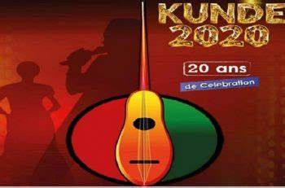

Un écrin de lumière dans la nuit ouagalaise Le Ciné Neerwaya se dresse comme un phare culturel au cœur de Ouagadougou, son architecture moderne épurée jouant avec les ombres et lumières. Ses murs ocre rouge rappellent les terres burkinabè, tandis que son enseigne néon scintille telle une étoile guidant les amoureux du 7ème art. L'entrée, large et accueillante, promet déjà l'évasion. Au Neerwaya, ce n'est pas un film qu'on vient voir, c'est une expérience qu'on vient vivre. Là où les rêves prennent vie; À l'intérieur, la magie opère dès le franchissement des portes : l'odeur caractéristique du popcorn frais se mêle au parfum discret du cuir des fauteuils. La salle principale, vaste cathédrale des temps modernes, enveloppe les spectateurs dans une douce pénombre bleutée avant que ne jaillisse la lumière projetée. Le son enveloppant et l'image cristalline transportent instantanément vers d'autres mondes.
Chaque projection est une cérémonie. Les lumières qui s'éteignent progressivement, le silence qui s'installe dans l'attente du premier plan, cette sensation collective d'embarquer pour un voyage imaginaire... Le Ciné Neerwaya maîtrise parfaitement ce rituel sacré du cinéma,fait d'elle Un carrefour des émotions humaines. Le Ciné Neerwaya n'est pas qu'un simple complexe cinématographique - c'est le lieu où toute la ville vient partager ses rires, ses larmes et ses frissons. Les murmures étouffés devant un suspense haletant, les applaudissements spontanés après une scène mémorable, les discussions animées à la sortie... Autant de rituels qui font de ce lieu bien plus qu'un cinéma : un espace vivant de communion émotionnelle.
- *Année* : Ouvert en *1965*. - *Rôle* : Salle mythique du cinéma burkinabè, projetant films occidentaux et africains. - *FESPACO* : Lieu clé du festival dès *1969*. - *Fin* : Fermé dans les *années 1990-2000* (déclin des salles). - *Aujourd’hui* : Bâtiment abandonné, symbole nostalgique. *Ciné Neerwaya* (parfois orthographié Ciné Nerwaya) est une salle de cinéma historique située à *Ouagadougou*, au Burkina Faso. Bien que les informations exactes sur sa création soient peu documentées, voici ce que l’on sait de son histoire :
*Origine et rôle culturel* - Le cinéma *Neerwaya* a été l’une des premières salles de projection de Ouagadougou, probablement construite dans les *années 1960-1970*, pendant l’essor du cinéma en Afrique de l’Ouest. - Il a joué un rôle important dans la diffusion du *cinéma populaire* (films africains, occidentaux et bollywoodiens) auprès du public burkinabè. - Comme d’autres salles de l’époque (ex. : Ciné Burkina), il a contribué à la culture cinématographique avant l’avènement des multiplexes modernes. *Déclin et situation actuelle* - Avec la montée de la *télévision, des **DVD* et des *plateformes numériques*, beaucoup de salles traditionnelles comme le Neerwaya ont perdu de leur fréquentation. - Certaines sources indiquent qu’il a fermé ses portes dans les *années 2000*, bien que l’emplacement exact et son état actuel restent peu connus. *Héritage* - Le nom Neerwaya reste associé à la mémoire du *cinéma burkinabè*, notamment pour les générations qui ont grandi avec ces salles mythiques. - Le Burkina Faso, terre du *FESPACO* (Festival panafricain du cinéma de Ouagadougou), conserve une forte tradition cinématographique, même si les anciens cinémas comme le Neerwaya ont cédé la place à de nouveaux espaces culturels. Si tu cherches des détails précis (date exacte, propriétaires, archives), je te conseille de consulter les *archives nationales du Burkina* ou des anciens passionnés de cinéma à Ouagadougou. En 2 mots : "Le cinéma lumière de Ouaga".
|  | ||
|---|---|---|
| < |